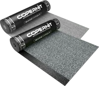
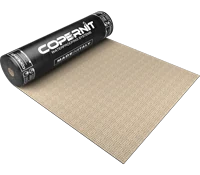
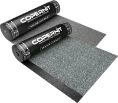
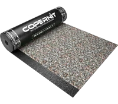
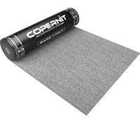

Astropol
APP -10 °C · Poliestere filo continuo stabilizzato
Membrana con mescola elasto-plastomerica ottenuta dalla modifica di bitume distillato con poliolefine e copolimeri selezionati, con buona flessibilità alle basse temperature ed elevata adesività. Resistente all'invecchiamento, garantisce tenuta dei sormonti e posa facile.

Astropol Biarmato
APP -10 °C · Biarmato
Membrana con doppia armatura (velo di vetro e tessuto non tessuto in poliestere), buona flessibilità alle basse temperature ed elevata adesività. La doppia armatura garantisce stabilità dimensionale, ideale per la posa su strato termoisolante.

Tecnoroof
APP -10 °C · Poliestere composito
Membrana con mescola plastomerica che abbina buona adesività a facilità di posa del rotolo. Il buon comportamento sia alle basse che alle alte temperature la rende adatta ai climi con forte escursione termica.
Supergum Plus
APP -10 °C · Poliestere composito
Membrana con mescola plastomerica che garantisce facilità di applicazione in diverse condizioni climatiche e perfetta adesione delle giunzioni. Buon rapporto peso/spessore e resistenza all'invecchiamento.
Sintopol
APP -5 °C · Poliestere composito
Membrana con mescola plastomerica che garantisce facilità di applicazione in diverse condizioni climatiche e perfetta adesione delle giunzioni, adatta a svariate soluzioni applicative.
Extrabit
APP -5 °C · Poliestere composito
Membrana con mescola plastomerica che garantisce facilità di applicazione e perfetta adesione delle giunzioni, con ottima tenuta del manto impermeabile e buona velocità di posa.

Extrabit Multicolor
APP -5 °C · Poliestere composito
Stessa mescola plastomerica di Extrabit, con autoprotezione Mineral Multicolor: colori e granulometrie distribuiti in modo disomogeneo e casuale, per una finitura unica su ogni rotolo.

Sintoglass
APP -5 °C · Velo vetro
Membrana con mescola plastomerica e armatura in feltro di vetro rinforzato, con facilità di applicazione, ottima tenuta del manto e buona velocità di posa.